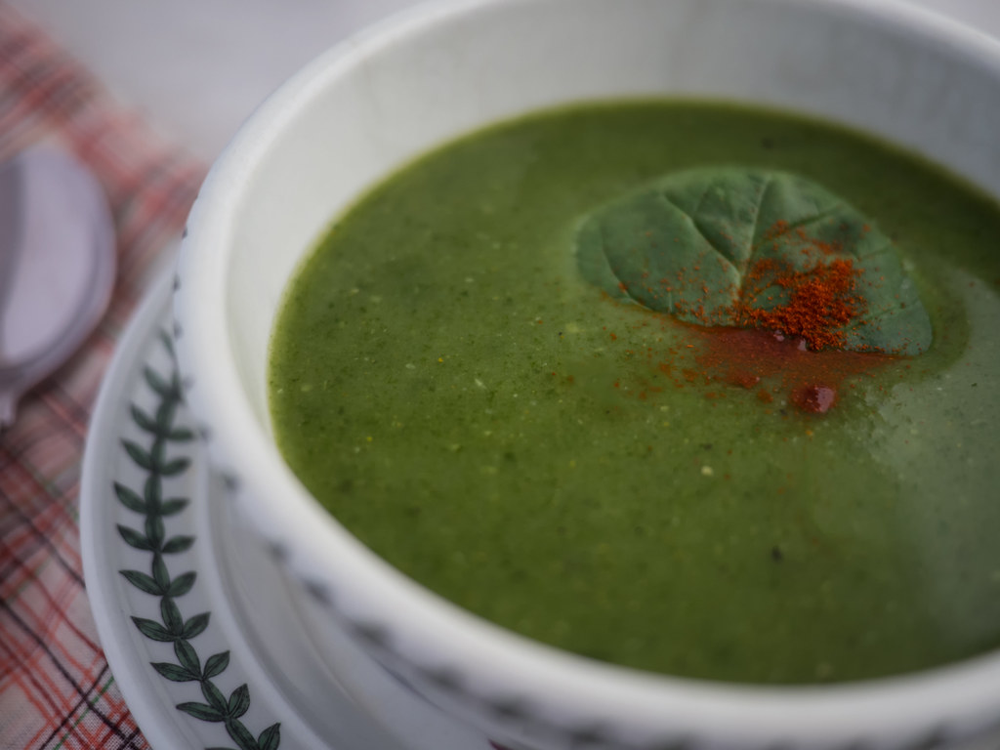

Recetario de Odin
Donde las recetas te llevarán al mismísimo Valhalla.
Cómo preparar: Sopa verde

Introducción
Si te gustan las espinacas, esta es tu sopa. Si no te gustan te aguantas pues en la antiguedad comías lo que tenías.
No te preocupes, también tiene puerro para darle más sabor.
Ingredientes
- Espinagas fresgas o congeladas (300g)
- Un puerro
- 1L de caldo
- Perejil picado (1/2 de taza)
- Sal
- Pimienta
- Jengibre
- 2 o 3 yemas de huevo
- Nata (1/2 de taza)
- Nuez moscada
Preparación
- Limpiar y enjuagar las espinacas.
- Cortar a rodajas finas el puerro.
- Llevar el caldo a ebullición y añadir las espinacas y el puerro. Dejar hervir 5 minutos.
- Añadir el perejil y dejar hervir unos minutos más. Agregar sal, pimienta y jengibre a gusto.
- Batir las yemas de huevo con la nata en el fondo de una sopera.
- Verter la sopa en la sopera mientras se bate enérgicamente.
- Rallar un poco de nuez moscada sobre la sopa y servir con un buen pan.
Volver al recetario